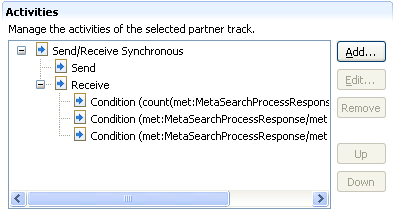
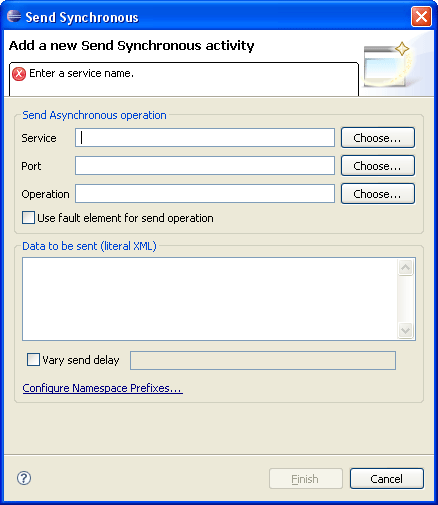
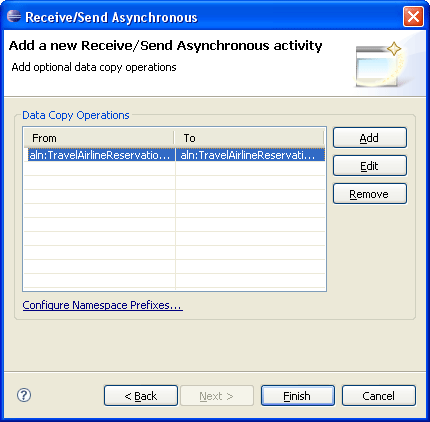
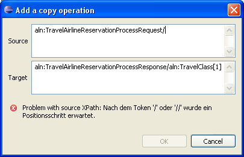

This section covers managing of activities of a partner track. To enable the Activities section at the bottom right of the editor, select a partner track in the Test Cases and Tracks section (lower left).

The Activities section contains a tree view. The root nodes in the tree represent activities. Their children are subactivites and/or special nodes like Conditions, Copy Operations, or Header Processors.
BPELUnit supports six types of activities, which may be added by right-clicking in the tree and selecting New..., or by clicking the Add.. button:
Each unique Send or Receive requires a WSDL operation. In case of Send Only and Receive Only, exactly one operation must be specified. In case of the synchronous activities, one operation is also sufficient. The asynchronous activities Send/Receive and Receive/Send require two operations.
The tool support contains a customized wizard for each activity. Besides a send and/or receive specification, each activity may contain the following components:
The Send and Receive, Copy Operations, and Header Processor input fields are the same in all wizards.
Let's have a look at the Send specficiation of a Send Only activity:

The Send specification requires a Service, Port, and Operation to be specified. By selecting the Choose... buttons, you may select a service, port and operation from the WSDL file.
If you wish to send a SOAP fault, check the Use fault element for send operation button.
The data to be sent can be entered in the Literal XML field. The XML will be validated as you type, informing you of any syntactical error. You don't need to define namespaces in the XML, as BPELUnit handles namespaces for you. For this to work, however, you must use the prefixes defined in the Namespaces Prefixes wizard. You can click on the Configure Namespace Prefixes link at any time to review or change the prefixes and namespaces.
As already mentioned in the description of the Test Cases and Tracks section, each send operation may contain a send delay sequence - a comma-separated list of delay times in seconds.
The following screenshot shows a Receive specification inside of a Receive/Send Synchronous activity wizard:
Being a synchronous activity, the Receive and Send specification share one WSDL operation (at the top) - therefore, the operation block allows fault specification for both send and receive.
A receive specification consists of Conditions with are checked against the incoming XML data. You may select Add, Edit, and Remove to manage the conditions. The following screenshot shows an example of a condition:

The following screenshot shows a data copy operation inside of a Receive/Send Asynchronous activity:

You may add any number of data copy operations. Data copy operations copy a text value from an element specified by the From XPath to the element identified by the To XPath. When adding a new condition, the XPath expressions will be validated as-you-type:

Header Processors may be added to any activity. A header processor has access to a SOAP message before it is sent (in a Send activity) and/or before it is processed (in a Receive activity). The main purpose of header processors is to enable Asynchronous Callback Messaging, but other processors may be added to BPELUnit as required. Initially, BPELUnit ships with a header processor implementing the WS-Adressing protocol.
A header processor may be parameterized with any number of options. The default WS-A header processor, however, does not require parameterization. It is therefore sufficient to just select it in the combo box.
The following screenshot shows the header processor page inside a Receive/Send Asynchronous wizard: